Note
Go to the end to download the full example code.
Volume Source Example¶
Estimate NCRFs for frequent and infrequent (oddball) tones.
For this tutorial, we use the auditory Brainstorm tutorial dataset [Tadel et al., 2011] that is available as a part of the Brainstorm software.
Note
Downloading the dataset requires answering an interactive prompt (see
mne.datasets.brainstorm.bst_auditory.data_path()).
# Authors: Proloy Das <proloy@umd.edu>
# Christian Brodbeck <brodbecc@mcmaster.ca>
#
# sphinx_gallery_thumbnail_number = 8
import eelbrain
import mne
from ncrf import fit_ncrf
import numpy as np
import pandas as pd
Preprocessing¶
We broadly follow this mne-python tutorial.
data_path = mne.datasets.brainstorm.bst_auditory.data_path()
raw_fname = data_path / 'MEG' / 'bst_auditory' / 'S01_AEF_20131218_01.ds'
raw = mne.io.read_raw_ctf(raw_fname, preload=False)
eog_proj_fname = data_path / 'MEG' / 'bst_auditory' / 'bst_auditory-eog-proj.fif'
eog_proj = mne.read_proj(eog_proj_fname)
# We mark a set of bad channels that seem noisier than others.
raw.info['bads'] = ['MLO52-4408', 'MRT51-4408', 'MLO42-4408', 'MLO43-4408']
# For noise reduction, a set of bad segments have been identified and stored in
# csv files. The bad segments are later used to reject epochs that overlap with
# them. We use pandas to read the data from the csv files.
csv_fname = data_path / 'MEG' / 'bst_auditory' / 'events_bad_01.csv'
annotations_df = pd.read_csv(csv_fname, header=None,
names=['onset', 'duration', 'id', 'label'])
print('Events from run 1:')
print(annotations_df)
# Conversion from samples to times:
onsets = annotations_df['onset'].values / raw.info['sfreq']
durations = annotations_df['duration'].values / raw.info['sfreq']
descriptions = annotations_df['label'].values
annotations = mne.Annotations(onsets, durations, descriptions)
raw.set_annotations(annotations)
License
-------
This tutorial dataset (EEG and MRI data) remains a property of the MEG Lab,
McConnell Brain Imaging Center, Montreal Neurological Institute,
McGill University, Canada. Its use and transfer outside the Brainstorm
tutorial, e.g. for research purposes, is prohibited without written consent
from the MEG Lab.
If you reference this dataset in your publications, please:
1) acknowledge its authors: Elizabeth Bock, Esther Florin, Francois Tadel
and Sylvain Baillet, and
2) cite Brainstorm as indicated on the website:
http://neuroimage.usc.edu/brainstorm
For questions, please contact Francois Tadel (francois.tadel@mcgill.ca).
Agree (y/[n])? Downloading file 'bst_auditory.tar.gz' from 'https://osf.io/download/5t9n8?version=1' to '/home/runner/mne_data'.
Failed to download 'bst_auditory.tar.gz'. Will attempt the download again 2 more times.
0%| | 0.00/1.64G [00:00<?, ?B/s]
0%| | 232k/1.64G [00:00<11:44, 2.32MB/s]
0%| | 1.69M/1.64G [00:00<02:52, 9.47MB/s]
0%|▏ | 6.97M/1.64G [00:00<00:55, 29.2MB/s]
1%|▍ | 16.7M/1.64G [00:00<00:28, 55.9MB/s]
1%|▌ | 23.1M/1.64G [00:00<00:30, 52.5MB/s]
2%|▊ | 33.3M/1.64G [00:00<00:23, 68.1MB/s]
2%|▉ | 40.3M/1.64G [00:00<00:28, 55.7MB/s]
3%|█ | 46.3M/1.64G [00:00<00:30, 52.1MB/s]
3%|█▏ | 53.5M/1.64G [00:01<00:33, 47.3MB/s]
4%|█▍ | 61.6M/1.64G [00:01<00:28, 55.2MB/s]
4%|█▌ | 69.2M/1.64G [00:01<00:27, 56.3MB/s]
5%|█▋ | 75.2M/1.64G [00:01<00:37, 42.1MB/s]
5%|█▊ | 80.8M/1.64G [00:01<00:34, 45.0MB/s]
5%|██ | 89.7M/1.64G [00:01<00:27, 55.2MB/s]
6%|██▏ | 98.6M/1.64G [00:01<00:25, 59.9MB/s]
7%|██▍ | 107M/1.64G [00:02<00:22, 66.9MB/s]
7%|██▋ | 115M/1.64G [00:02<00:23, 64.2MB/s]
8%|██▊ | 124M/1.64G [00:02<00:23, 63.3MB/s]
8%|███ | 133M/1.64G [00:02<00:21, 69.8MB/s]
9%|███▎ | 140M/1.64G [00:02<00:27, 54.5MB/s]
9%|███▍ | 149M/1.64G [00:02<00:24, 61.8MB/s]
10%|███▋ | 157M/1.64G [00:02<00:21, 68.1MB/s]
10%|███▊ | 167M/1.64G [00:02<00:19, 74.4MB/s]
11%|████ | 176M/1.64G [00:03<00:18, 79.2MB/s]
11%|████▎ | 185M/1.64G [00:03<00:17, 82.8MB/s]
12%|████▌ | 194M/1.64G [00:03<00:16, 85.5MB/s]
12%|████▋ | 203M/1.64G [00:03<00:16, 86.8MB/s]
13%|████▉ | 212M/1.64G [00:03<00:18, 78.2MB/s]
13%|█████ | 220M/1.64G [00:03<00:21, 66.8MB/s]
14%|█████▎ | 229M/1.64G [00:03<00:19, 72.5MB/s]
15%|█████▌ | 239M/1.64G [00:03<00:17, 78.4MB/s]
15%|█████▋ | 247M/1.64G [00:03<00:17, 78.3MB/s]
16%|█████▉ | 256M/1.64G [00:04<00:16, 81.8MB/s]
16%|██████▏ | 265M/1.64G [00:04<00:16, 81.9MB/s]
17%|██████▎ | 273M/1.64G [00:04<00:16, 83.8MB/s]
17%|██████▌ | 282M/1.64G [00:04<00:19, 69.2MB/s]
18%|██████▊ | 291M/1.64G [00:04<00:17, 74.9MB/s]
18%|██████▉ | 300M/1.64G [00:04<00:16, 79.9MB/s]
19%|███████▏ | 310M/1.64G [00:04<00:15, 83.7MB/s]
20%|███████▍ | 319M/1.64G [00:04<00:15, 86.5MB/s]
20%|███████▋ | 329M/1.64G [00:04<00:14, 88.9MB/s]
21%|███████▊ | 338M/1.64G [00:05<00:17, 75.3MB/s]
21%|████████ | 347M/1.64G [00:05<00:16, 79.6MB/s]
22%|████████▎ | 355M/1.64G [00:05<00:27, 47.4MB/s]
22%|████████▍ | 364M/1.64G [00:05<00:22, 55.5MB/s]
23%|████████▋ | 374M/1.64G [00:05<00:19, 63.2MB/s]
23%|████████▊ | 382M/1.64G [00:05<00:19, 64.0MB/s]
24%|█████████ | 390M/1.64G [00:05<00:17, 69.2MB/s]
24%|█████████▎ | 399M/1.64G [00:06<00:16, 73.0MB/s]
25%|█████████▍ | 407M/1.64G [00:06<00:19, 61.6MB/s]
25%|█████████▋ | 415M/1.64G [00:06<00:17, 67.8MB/s]
26%|█████████▊ | 424M/1.64G [00:06<00:16, 73.6MB/s]
27%|██████████ | 434M/1.64G [00:06<00:15, 78.7MB/s]
27%|██████████▎ | 443M/1.64G [00:06<00:14, 82.5MB/s]
28%|██████████▌ | 452M/1.64G [00:06<00:13, 85.1MB/s]
28%|██████████▋ | 461M/1.64G [00:06<00:13, 87.5MB/s]
29%|██████████▉ | 471M/1.64G [00:06<00:13, 89.5MB/s]
29%|███████████▏ | 480M/1.64G [00:07<00:12, 91.2MB/s]
30%|███████████▍ | 490M/1.64G [00:07<00:12, 92.7MB/s]
31%|███████████▌ | 499M/1.64G [00:07<00:12, 93.4MB/s]
31%|███████████▊ | 509M/1.64G [00:07<00:11, 93.9MB/s]
32%|████████████ | 519M/1.64G [00:07<00:11, 94.2MB/s]
32%|████████████▎ | 528M/1.64G [00:07<00:13, 80.5MB/s]
33%|████████████▍ | 537M/1.64G [00:07<00:13, 82.8MB/s]
33%|████████████▋ | 546M/1.64G [00:07<00:12, 84.8MB/s]
34%|████████████▉ | 555M/1.64G [00:07<00:12, 85.8MB/s]
34%|█████████████ | 564M/1.64G [00:07<00:12, 87.1MB/s]
35%|█████████████▎ | 573M/1.64G [00:08<00:11, 89.5MB/s]
36%|█████████████▌ | 582M/1.64G [00:08<00:13, 79.9MB/s]
36%|█████████████▋ | 591M/1.64G [00:08<00:13, 80.3MB/s]
37%|█████████████▉ | 600M/1.64G [00:08<00:12, 84.6MB/s]
37%|██████████████▏ | 609M/1.64G [00:08<00:12, 85.3MB/s]
38%|██████████████▎ | 618M/1.64G [00:08<00:11, 86.5MB/s]
38%|██████████████▌ | 627M/1.64G [00:08<00:11, 88.6MB/s]
39%|██████████████▊ | 636M/1.64G [00:08<00:12, 79.0MB/s]
39%|██████████████▉ | 646M/1.64G [00:08<00:11, 83.4MB/s]
40%|███████████████▏ | 654M/1.64G [00:09<00:13, 73.5MB/s]
41%|███████████████▍ | 663M/1.64G [00:09<00:13, 70.8MB/s]
41%|███████████████▌ | 670M/1.64G [00:09<00:13, 69.8MB/s]
42%|███████████████▊ | 679M/1.64G [00:09<00:12, 76.3MB/s]
42%|████████████████ | 689M/1.64G [00:09<00:11, 81.0MB/s]
43%|████████████████▏ | 698M/1.64G [00:09<00:11, 83.3MB/s]
43%|████████████████▍ | 707M/1.64G [00:09<00:10, 86.3MB/s]
44%|████████████████▋ | 717M/1.64G [00:09<00:10, 88.5MB/s]
44%|████████████████▊ | 725M/1.64G [00:09<00:11, 81.8MB/s]
45%|█████████████████ | 736M/1.64G [00:10<00:10, 87.7MB/s]
46%|█████████████████▎ | 746M/1.64G [00:10<00:09, 92.6MB/s]
46%|█████████████████▌ | 757M/1.64G [00:10<00:09, 96.6MB/s]
47%|█████████████████▊ | 767M/1.64G [00:10<00:10, 80.0MB/s]
48%|██████████████████ | 777M/1.64G [00:10<00:09, 86.0MB/s]
48%|██████████████████▎ | 788M/1.64G [00:10<00:09, 91.3MB/s]
49%|██████████████████▌ | 798M/1.64G [00:10<00:08, 95.3MB/s]
49%|██████████████████▊ | 808M/1.64G [00:10<00:10, 77.1MB/s]
50%|██████████████████▉ | 817M/1.64G [00:11<00:10, 80.6MB/s]
51%|███████████████████▏ | 827M/1.64G [00:11<00:09, 86.6MB/s]
51%|███████████████████▍ | 837M/1.64G [00:11<00:09, 87.9MB/s]
52%|███████████████████▋ | 846M/1.64G [00:11<00:11, 67.7MB/s]
52%|███████████████████▉ | 856M/1.64G [00:11<00:10, 76.2MB/s]
53%|████████████████████▏ | 867M/1.64G [00:11<00:09, 83.3MB/s]
54%|████████████████████▍ | 877M/1.64G [00:11<00:08, 89.0MB/s]
54%|████████████████████▌ | 888M/1.64G [00:11<00:08, 93.4MB/s]
55%|████████████████████▊ | 898M/1.64G [00:12<00:11, 62.9MB/s]
56%|█████████████████████ | 908M/1.64G [00:12<00:10, 71.2MB/s]
56%|█████████████████████▎ | 916M/1.64G [00:12<00:10, 66.8MB/s]
57%|█████████████████████▌ | 926M/1.64G [00:12<00:09, 74.4MB/s]
57%|█████████████████████▊ | 936M/1.64G [00:12<00:10, 64.6MB/s]
58%|█████████████████████▉ | 946M/1.64G [00:12<00:09, 72.5MB/s]
58%|██████████████████████▏ | 957M/1.64G [00:12<00:08, 79.8MB/s]
59%|██████████████████████▍ | 966M/1.64G [00:13<00:08, 75.4MB/s]
60%|██████████████████████▋ | 976M/1.64G [00:13<00:08, 82.3MB/s]
60%|██████████████████████▉ | 986M/1.64G [00:13<00:07, 88.2MB/s]
61%|███████████████████████▏ | 996M/1.64G [00:13<00:07, 82.2MB/s]
61%|██████████████████████▊ | 1.01G/1.64G [00:13<00:07, 87.3MB/s]
62%|██████████████████████▉ | 1.01G/1.64G [00:13<00:07, 79.2MB/s]
63%|███████████████████████▏ | 1.03G/1.64G [00:13<00:07, 85.7MB/s]
63%|███████████████████████▍ | 1.04G/1.64G [00:13<00:06, 91.2MB/s]
64%|███████████████████████▋ | 1.05G/1.64G [00:14<00:08, 67.0MB/s]
65%|███████████████████████▉ | 1.06G/1.64G [00:14<00:07, 75.3MB/s]
65%|████████████████████████ | 1.06G/1.64G [00:14<00:07, 76.4MB/s]
66%|████████████████████████▎ | 1.07G/1.64G [00:14<00:09, 62.4MB/s]
66%|████████████████████████▍ | 1.08G/1.64G [00:14<00:07, 71.1MB/s]
67%|████████████████████████▋ | 1.09G/1.64G [00:14<00:06, 78.6MB/s]
67%|████████████████████████▉ | 1.10G/1.64G [00:14<00:06, 85.0MB/s]
68%|█████████████████████████▏ | 1.11G/1.64G [00:14<00:05, 90.1MB/s]
69%|█████████████████████████▍ | 1.12G/1.64G [00:14<00:05, 93.9MB/s]
69%|█████████████████████████▋ | 1.13G/1.64G [00:15<00:05, 96.8MB/s]
70%|█████████████████████████▉ | 1.14G/1.64G [00:15<00:04, 98.9MB/s]
71%|██████████████████████████▏ | 1.16G/1.64G [00:15<00:05, 84.1MB/s]
71%|██████████████████████████▎ | 1.17G/1.64G [00:15<00:05, 88.3MB/s]
72%|██████████████████████████▌ | 1.18G/1.64G [00:15<00:04, 92.3MB/s]
73%|██████████████████████████▊ | 1.19G/1.64G [00:15<00:04, 95.8MB/s]
73%|███████████████████████████ | 1.20G/1.64G [00:15<00:04, 88.9MB/s]
74%|███████████████████████████▎ | 1.21G/1.64G [00:15<00:04, 92.9MB/s]
74%|███████████████████████████▌ | 1.22G/1.64G [00:15<00:04, 95.9MB/s]
75%|███████████████████████████▊ | 1.23G/1.64G [00:16<00:04, 97.9MB/s]
76%|███████████████████████████▉ | 1.24G/1.64G [00:16<00:03, 99.7MB/s]
76%|████████████████████████████▉ | 1.25G/1.64G [00:16<00:03, 101MB/s]
77%|█████████████████████████████▏ | 1.26G/1.64G [00:16<00:03, 102MB/s]
78%|█████████████████████████████▍ | 1.27G/1.64G [00:16<00:03, 102MB/s]
78%|████████████████████████████▉ | 1.28G/1.64G [00:16<00:04, 82.9MB/s]
79%|█████████████████████████████▏ | 1.29G/1.64G [00:16<00:03, 87.2MB/s]
79%|█████████████████████████████▎ | 1.30G/1.64G [00:16<00:04, 71.8MB/s]
80%|█████████████████████████████▌ | 1.31G/1.64G [00:17<00:04, 77.4MB/s]
81%|█████████████████████████████▊ | 1.32G/1.64G [00:17<00:04, 64.9MB/s]
81%|██████████████████████████████ | 1.33G/1.64G [00:17<00:04, 72.9MB/s]
82%|██████████████████████████████▎ | 1.34G/1.64G [00:17<00:03, 80.3MB/s]
82%|██████████████████████████████▍ | 1.35G/1.64G [00:17<00:03, 86.5MB/s]
83%|██████████████████████████████▋ | 1.36G/1.64G [00:17<00:03, 90.7MB/s]
84%|██████████████████████████████▉ | 1.37G/1.64G [00:17<00:02, 94.2MB/s]
84%|███████████████████████████████▏ | 1.38G/1.64G [00:17<00:02, 94.2MB/s]
85%|███████████████████████████████▍ | 1.39G/1.64G [00:17<00:02, 96.2MB/s]
86%|███████████████████████████████▋ | 1.40G/1.64G [00:18<00:02, 98.4MB/s]
86%|███████████████████████████████▊ | 1.41G/1.64G [00:18<00:02, 83.7MB/s]
87%|████████████████████████████████ | 1.42G/1.64G [00:18<00:02, 88.6MB/s]
87%|████████████████████████████████▎ | 1.43G/1.64G [00:18<00:02, 92.6MB/s]
88%|████████████████████████████████▌ | 1.44G/1.64G [00:18<00:02, 95.6MB/s]
89%|████████████████████████████████▊ | 1.45G/1.64G [00:18<00:01, 98.2MB/s]
89%|█████████████████████████████████ | 1.46G/1.64G [00:18<00:02, 86.6MB/s]
90%|█████████████████████████████████▏ | 1.47G/1.64G [00:18<00:02, 70.1MB/s]
90%|█████████████████████████████████▍ | 1.48G/1.64G [00:19<00:02, 77.6MB/s]
91%|█████████████████████████████████▋ | 1.49G/1.64G [00:19<00:01, 80.5MB/s]
92%|█████████████████████████████████▉ | 1.50G/1.64G [00:19<00:01, 85.9MB/s]
92%|██████████████████████████████████▏ | 1.51G/1.64G [00:19<00:01, 90.3MB/s]
93%|██████████████████████████████████▎ | 1.52G/1.64G [00:19<00:01, 92.9MB/s]
94%|██████████████████████████████████▌ | 1.53G/1.64G [00:19<00:01, 95.5MB/s]
94%|██████████████████████████████████▊ | 1.54G/1.64G [00:19<00:00, 96.6MB/s]
95%|███████████████████████████████████ | 1.55G/1.64G [00:19<00:01, 82.9MB/s]
95%|███████████████████████████████████▎ | 1.56G/1.64G [00:19<00:00, 81.2MB/s]
96%|███████████████████████████████████▍ | 1.57G/1.64G [00:20<00:00, 85.9MB/s]
97%|███████████████████████████████████▋ | 1.58G/1.64G [00:20<00:00, 90.2MB/s]
97%|███████████████████████████████████▉ | 1.59G/1.64G [00:20<00:00, 68.1MB/s]
98%|████████████████████████████████████▏| 1.60G/1.64G [00:20<00:00, 75.5MB/s]
98%|████████████████████████████████████▍| 1.61G/1.64G [00:20<00:00, 81.4MB/s]
99%|████████████████████████████████████▌| 1.62G/1.64G [00:20<00:00, 66.1MB/s]
100%|████████████████████████████████████▊| 1.63G/1.64G [00:20<00:00, 73.9MB/s]
0%| | 0.00/1.64G [00:00<?, ?B/s]
100%|█████████████████████████████████████| 1.64G/1.64G [00:00<00:00, 7.27TB/s]
Untarring contents of '/home/runner/mne_data/bst_auditory.tar.gz' to '/home/runner/mne_data/MNE-brainstorm-data'
Events from run 1:
onset duration id label
0 7625 2776 1 BAD
1 142459 892 1 BAD
2 216954 460 1 BAD
3 345135 5816 1 BAD
4 357687 1053 1 BAD
5 409101 3736 1 BAD
6 461110 179 1 BAD
7 479866 426 1 BAD
8 764914 11500 1 BAD
9 798174 6589 1 BAD
10 846880 5383 1 BAD
11 858863 5136 1 BAD
Event preprocessing: In this dataset, triggers can be adjusted by using a recording of the audio that was presented.
# Events are the presentation times of the audio stimuli: UPPT001
event_fname = data_path / 'MEG' / 'bst_auditory' / 'S01_AEF_20131218_01-eve.fif'
events = mne.find_events(raw, stim_channel='UPPT001')
# The event timing is adjusted by comparing the trigger times on detected sound onsets on channel UADC001-4408
sound_data = raw[raw.ch_names.index('UADC001-4408')][0][0]
onsets = np.where(np.abs(sound_data) > 2. * np.std(sound_data))[0]
min_diff = int(0.5 * raw.info['sfreq'])
diffs = np.concatenate([[min_diff + 1], np.diff(onsets)])
onsets = onsets[diffs > min_diff]
assert len(onsets) == len(events)
diffs = 1000. * (events[:, 0] - onsets) / raw.info['sfreq']
print(f'Trigger delay removed (μ ± σ): {diffs.mean():.1f} ± {diffs.std():.1f} ms')
# Since event onsets are stored in samples
event_sfreq = raw.info['sfreq']
# DataFrame for sound events
sound_events = pd.DataFrame({
'onset': onsets,
'time': onsets / event_sfreq,
'duration': np.ones(len(onsets)),
'id': events[:, 2],
'label': pd.Categorical.from_codes(events[:, 2], ['', 'frequent', 'infrequent']),
})
sound_events
Trigger delay removed (μ ± σ): -13.9 ± 0.3 ms
Visualize the event related fields (ERFs) for the two types of stimuli (frequent and infrequent beeps). This is just to get a quick impression of the data, and to check if the event timing is correct.
events[:, 0] = onsets # Adjust event onsets
event_id = dict(frequent=1, infrequent=2)
reject = dict(mag=4e-12)
epochs = mne.Epochs(raw.copy().load_data().filter(1, 25.0), events, event_id, reject=reject, picks='mag', reject_by_annotation=True, preload=True)
epochs.add_proj(eog_proj) # Add EOG projectors to epochs
epochs.apply_proj() # Apply projectors to epochs
evoked_ndvar = [eelbrain.load.mne.epochs_ndvar(epochs[name], data='mag', name=name).mean('case')
for name in ('frequent', 'infrequent')]
evoked_ndvar.append((evoked_ndvar[1] - evoked_ndvar[0]).copy('contrast'))
p = eelbrain.plot.TopoButterfly(evoked_ndvar, t=.190, ylabel=False, vmax=300e-15)
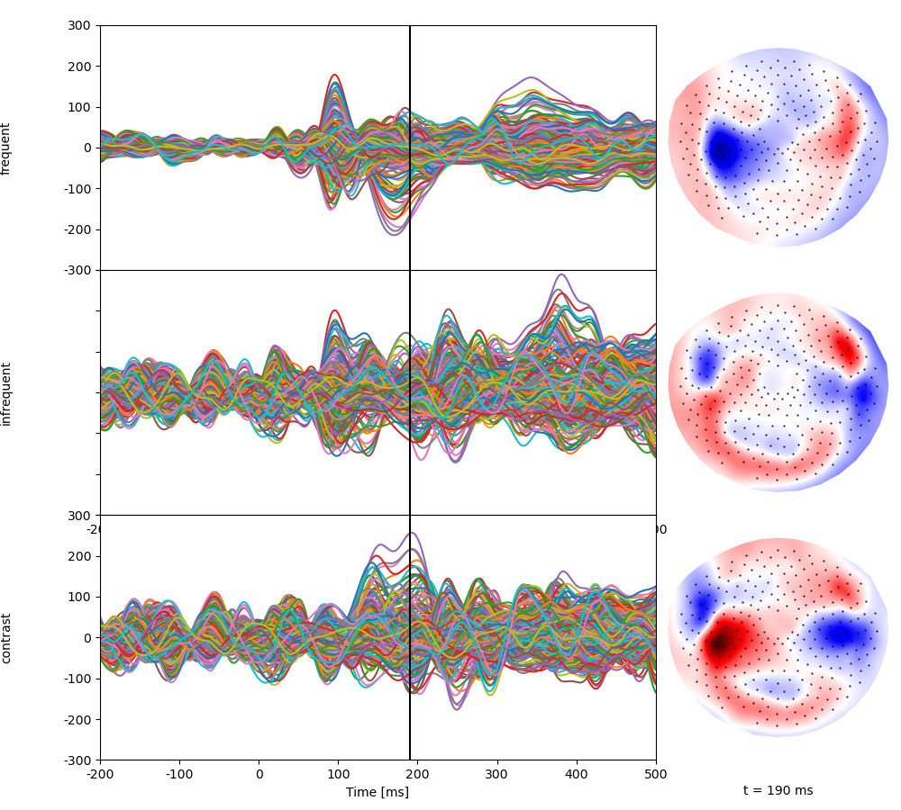
Preprocess MEG Data: low pass filtering, power line attenuation, downsampling, etc.
raw.add_proj(eog_proj).apply_proj() # Add EOG projectors to raw data
# Notch filter for power line artifact
raw.load_data()
raw.notch_filter(np.arange(60, 181, 60), fir_design='firwin')
# Band pass filtering 1-20 Hz
raw.filter(1.0, 20.0, fir_design='firwin')
# Crop relative to sound events
tmin = sound_events['time'].min() - 0.2
tmax = sound_events['time'].max() + 1.0
raw.crop(tmin, tmax)
# Resample to 100 Hz
raw.resample(100, npad="auto")
# `raw` remembers the original time axis, consistent with events
raw.first_time
5.48
Convert MEG data to eelbrain.NDVar for NCRF estimation.
meg = eelbrain.load.mne.raw_ndvar(raw)
# Time axis is preserved (t_start, t_step, n_samples)
meg.time
UTS(5.48, 0.01, 30791)
Continuous stimulus variable construction¶
After loading and preprocessing the raw data, we will construct predictor variables for this particular experiment. Here, we construct predictor variables by placing an impulse at every stimulus tone onset. Note that the predictor variable and MEG response should have the same time axis.
In this example, we use two different predictor variables: For the common response to any tone, we put impulses at the presentation times of both the audio stimuli (i.e., frequent and infrequent beeps). To distinguish infrequent from frequent beeps (i.e., contrast), we assign 1 and -1 impulses to infrequent and frequent beeps, respectively (contrast coding).
# Create an all-zero NDVar with time axis matching the MEG data
stim1 = eelbrain.NDVar.zeros(meg.time, 'common')
# Set values at time points for any sound to 1.
stim1[sound_events['time'].values] = 1. # [Common]
# To contrast infrequent from frequent beeps, we assign 1 and -1 impulses,
# respectively
stim2 = stim1.copy('contrast')
frequent_index = sound_events['label'] == 'frequent'
stim2[sound_events['time'].values[frequent_index]] = -1 # [Contrast]
# Visualize the predictors
p = eelbrain.plot.UTS([stim1, stim2], color='black', stem=True, frame='none',
w=10, h=2.5, legend=False)
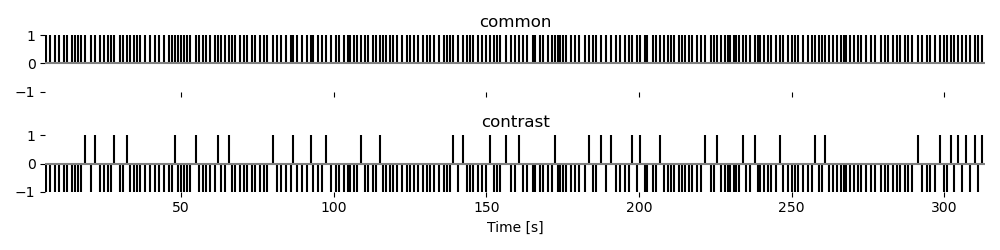
Noise covariance estimation¶
Here we estimate the noise covariance from empty room data.
noise_path = data_path / 'MEG' / 'bst_auditory' / 'S01_Noise_20131218_01.ds'
raw_empty_room = mne.io.read_raw_ctf(noise_path, preload=True)
# Apply the same pre-processing steps to empty room data
raw_empty_room.add_proj(eog_proj)
raw_empty_room.notch_filter(np.arange(60, 181, 60), fir_design='firwin')
raw_empty_room.filter(1.0, 20.0, fir_design='firwin')
raw_empty_room.resample(100, npad="auto")
# Compute the noise covariance matrix
noise_cov = mne.compute_raw_covariance(raw_empty_room, tmin=0, tmax=None,
method='shrunk', rank=None)
Forward model (aka lead-field matrix)¶
Create a volume source space based on a 10 mm voxel grid.
# The paths to FreeSurfer reconstructions
subjects_dir = data_path / 'subjects'
subject = 'bst_auditory'
# The transformation file obtained by coregistration
trans = data_path / 'MEG' / 'bst_auditory' / 'bst_auditory-trans.fif'
# Uncomment for visualization
# mne.viz.plot_alignment(raw.info, trans, subject=subject, dig=True,
# meg=['helmet', 'sensors'], subjects_dir=subjects_dir,
# surfaces='head')
# Cache/reload the source space for faster execution
srcfile = subjects_dir / 'bst_auditory' / 'bem' / 'bst_auditory-vol-10-src.fif'
if srcfile.is_file():
src = mne.read_source_spaces(srcfile)
else:
surface = subjects_dir / subject / "bem" / "inner_skull.surf"
src = mne.setup_volume_source_space(subject,
subjects_dir=subjects_dir,
surface=surface,
pos=10.0,
add_interpolator=True)
mne.write_source_spaces(srcfile, src, overwrite=True) # needed for smoothing
# Visualize the source space
fig = mne.viz.plot_bem(subject,
subjects_dir,
'coronal',
brain_surfaces='white',
src=src)
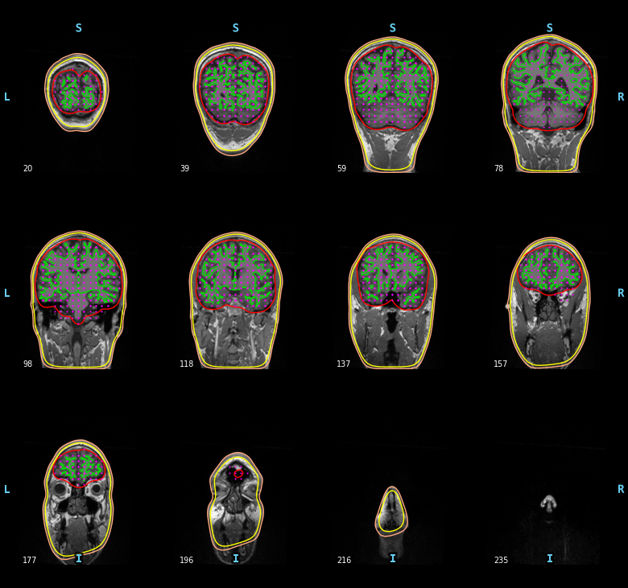
Compute the forward solution:
fwdfile = subjects_dir / 'bst_auditory' / 'bem' / 'bst_auditory-vol-10-fwd.fif'
if fwdfile.is_file():
fwd = mne.read_forward_solution(fwdfile)
else:
conductivity = (0.3,) # for single layer
# conductivity = (0.3, 0.006, 0.3) # for three layers
model = mne.make_bem_model(subject=subject, ico=4,
conductivity=conductivity,
subjects_dir=subjects_dir)
bem = mne.make_bem_solution(model)
fwd = mne.make_forward_solution(raw.info, trans=trans, src=src, bem=bem,
meg=True, eeg=False, mindist=5.0, n_jobs=2)
mne.write_forward_solution(fwdfile, fwd)
fwd
[Parallel(n_jobs=2)]: Using backend LokyBackend with 2 concurrent workers.
[Parallel(n_jobs=2)]: Done 2 out of 2 | elapsed: 1.8s finished
[Parallel(n_jobs=2)]: Using backend LokyBackend with 2 concurrent workers.
[Parallel(n_jobs=2)]: Done 2 out of 2 | elapsed: 0.9s finished
[Parallel(n_jobs=2)]: Using backend LokyBackend with 2 concurrent workers.
[Parallel(n_jobs=2)]: Done 2 out of 2 | elapsed: 0.9s finished
[Parallel(n_jobs=2)]: Using backend LokyBackend with 2 concurrent workers.
[Parallel(n_jobs=2)]: Done 2 out of 2 | elapsed: 0.3s finished
[Parallel(n_jobs=2)]: Using backend LokyBackend with 2 concurrent workers.
[Parallel(n_jobs=2)]: Done 2 out of 2 | elapsed: 0.2s finished
Extract the leadfield matrix as eelbrain.NDVar
lf = eelbrain.load.mne.forward_operator(fwd, src='vol-10',
subjects_dir=subjects_dir,
parc='aparc+aseg')
NCRF estimation¶
Now we have all the required data to estimate NCRFs.
Note
This example uses simplified settings to speed up estimation:
1) For this example, we use a fixed regularization parameter (mu).
For a real experiment, the optimal mu can be determined by
cross-validation (set mu='auto', which is the default).
The optimal mu will then be stored in model.mu
(this is how the mu used here was determined).
2) The example forces the estimation to stop after fewer iterations than
is recommended (n_iter). For stable models, we recommend to use the
default setting (n_iter=10).
# To speed up the example, we cache the NCRF
ncrf_file = data_path / 'MEG' / 'bst_auditory' / 'oddball_ncrf_vol.pickle'
if ncrf_file.exists():
model = eelbrain.load.unpickle(ncrf_file)
else:
model = fit_ncrf(
meg, [stim1, stim2], lf, noise_cov, tstart=0, tstop=0.5,
mu=4.958456130470556e-06, n_iter=5,
# mu='auto', n_iter=5,
)
eelbrain.save.pickle(model, ncrf_file)
model
<[free orientation] cTRFs estimator on <VolumeSourceSpace [1653], 'bst_auditory', 'vol-10', parc=aparc+aseg>>
The learned kernel/filter (the NCRF) can be accessed as an attribute of the
model.
NCRFs are stored as eelbrain.NDVar. Here, the two NCRFs correspond
to the two different predictor variables:
[<NDVar 'common': 1653 source, 3 space, 51 time>, <NDVar 'contrast': 1653 source, 3 space, 51 time>]
Visualization¶
A butterfly plot shows weights in all sources over time. This is good for forming a quick impression of important time lags, or peaks in the response:
Note
Since the estimates are sparse over cortical locations, smoothing the NCRFs over sources makes the visualization more intuitive.
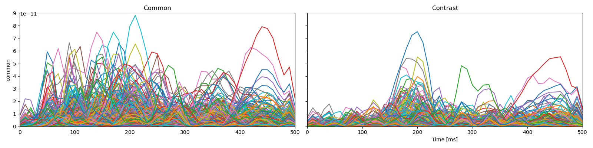
We can visualize anatomical locations of the peaks with 2D projections of
NCRFs using glass-brain plots.
The function eelbrain.plot.GlassBrain: visualizes a single time
point in that fashion.
For brain activations to align with a schematic brain overlay,
the plotted image should be in MNI coordinate space.
Hence, we will first morph the NCRFs to the fsaverage brain,
which is in MNI space.
mne.datasets.fetch_fsaverage(subjects_dir)
fname_src_fsaverage = subjects_dir / "fsaverage" / "bem" / "fsaverage-vol-5-src.fif"
src_fs = mne.read_source_spaces(fname_src_fsaverage)
morph = mne.compute_source_morph(
fwd["src"],
subject_from=subject,
subjects_dir=subjects_dir,
niter_affine=[10, 10, 5],
niter_sdr=[10, 10, 5], # just for speed
src_to=src_fs,
verbose=True,
)
def morph_to_fsaverage(h):
data = h.get_data(('source', 'space', 'time'))
time = h.get_dim('time')
stc = mne.VolVectorSourceEstimate(data, [fwd['src'][0]['vertno']],
time.tmin, time.tstep, subject)
stc_fsaverage = morph.apply(stc)
return eelbrain.load.mne.stc_ndvar(stc_fsaverage, 'fsaverage', 'vol-5')
hs = [morph_to_fsaverage(h) for h in hs_orig]
Downloading data from 'https://osf.io/download/3bxqt?version=2' to file '/tmp/tmpqc_wlyva/temp.zip'.
0%| | 0.00/196M [00:00<?, ?B/s]
0%| | 98.3k/196M [00:00<03:19, 982kB/s]
0%| | 485k/196M [00:00<01:13, 2.67MB/s]
1%|▍ | 2.51M/196M [00:00<00:18, 10.6MB/s]
5%|█▊ | 9.60M/196M [00:00<00:05, 34.4MB/s]
10%|███▋ | 18.8M/196M [00:00<00:03, 55.2MB/s]
14%|█████▍ | 28.1M/196M [00:00<00:02, 67.9MB/s]
19%|███████▎ | 37.8M/196M [00:00<00:02, 77.4MB/s]
24%|█████████▏ | 47.4M/196M [00:00<00:01, 82.7MB/s]
29%|███████████ | 57.0M/196M [00:00<00:01, 86.9MB/s]
34%|████████████▉ | 66.5M/196M [00:01<00:01, 88.9MB/s]
39%|██████████████▊ | 76.1M/196M [00:01<00:01, 91.2MB/s]
44%|████████████████▋ | 85.7M/196M [00:01<00:01, 92.1MB/s]
49%|██████████████████▌ | 95.4M/196M [00:01<00:01, 93.5MB/s]
54%|████████████████████▉ | 105M/196M [00:01<00:00, 93.6MB/s]
59%|██████████████████████▊ | 115M/196M [00:01<00:00, 94.4MB/s]
63%|████████████████████████▋ | 124M/196M [00:01<00:00, 94.1MB/s]
68%|██████████████████████████▋ | 134M/196M [00:01<00:00, 94.8MB/s]
73%|████████████████████████████▌ | 143M/196M [00:01<00:00, 94.8MB/s]
78%|██████████████████████████████▍ | 153M/196M [00:01<00:00, 95.3MB/s]
83%|████████████████████████████████▍ | 163M/196M [00:02<00:00, 94.8MB/s]
88%|██████████████████████████████████▎ | 172M/196M [00:02<00:00, 95.2MB/s]
93%|████████████████████████████████████▏ | 182M/196M [00:02<00:00, 95.0MB/s]
98%|██████████████████████████████████████▏| 192M/196M [00:02<00:00, 95.4MB/s]
0%| | 0.00/196M [00:00<?, ?B/s]
100%|████████████████████████████████████████| 196M/196M [00:00<00:00, 882GB/s]
Downloading data from 'https://osf.io/download/7ve8g?version=4' to file '/tmp/tmponywcndv/temp.zip'.
0%| | 0.00/239M [00:00<?, ?B/s]
0%| | 141k/239M [00:00<02:48, 1.41MB/s]
0%| | 713k/239M [00:00<01:00, 3.94MB/s]
2%|▌ | 3.59M/239M [00:00<00:15, 15.2MB/s]
5%|█▊ | 11.5M/239M [00:00<00:05, 40.2MB/s]
9%|███▍ | 21.6M/239M [00:00<00:03, 62.3MB/s]
13%|█████ | 32.1M/239M [00:00<00:02, 76.8MB/s]
18%|██████▊ | 42.4M/239M [00:00<00:02, 85.4MB/s]
22%|████████▍ | 53.0M/239M [00:00<00:02, 91.7MB/s]
27%|██████████ | 63.4M/239M [00:00<00:01, 95.8MB/s]
31%|███████████▊ | 73.9M/239M [00:01<00:01, 98.6MB/s]
35%|█████████████▊ | 84.4M/239M [00:01<00:01, 101MB/s]
40%|███████████████▌ | 95.0M/239M [00:01<00:01, 102MB/s]
44%|█████████████████▋ | 106M/239M [00:01<00:01, 103MB/s]
49%|███████████████████▍ | 116M/239M [00:01<00:01, 104MB/s]
53%|█████████████████████▏ | 127M/239M [00:01<00:01, 104MB/s]
57%|██████████████████████▉ | 137M/239M [00:01<00:00, 105MB/s]
62%|████████████████████████▊ | 148M/239M [00:01<00:00, 105MB/s]
66%|██████████████████████████▌ | 158M/239M [00:01<00:00, 105MB/s]
71%|████████████████████████████▎ | 169M/239M [00:01<00:00, 106MB/s]
75%|██████████████████████████████ | 180M/239M [00:02<00:00, 106MB/s]
80%|███████████████████████████████▊ | 190M/239M [00:02<00:00, 106MB/s]
84%|█████████████████████████████████▋ | 201M/239M [00:02<00:00, 105MB/s]
89%|███████████████████████████████████▍ | 211M/239M [00:02<00:00, 106MB/s]
93%|█████████████████████████████████████▏ | 222M/239M [00:02<00:00, 105MB/s]
97%|██████████████████████████████████████▉ | 233M/239M [00:02<00:00, 106MB/s]
0%| | 0.00/239M [00:00<?, ?B/s]
100%|███████████████████████████████████████| 239M/239M [00:00<00:00, 1.17TB/s]
[2026-05-06 13:53:09][dipy] INFO: ➞ Running center_of_mass step from affine registration...
[2026-05-06 13:53:09][dipy] INFO: ➞ Running translation step from affine registration...
[2026-05-06 13:53:11][dipy] INFO: ➞ Running rigid step from affine registration...
[2026-05-06 13:53:12][dipy] INFO: ➞ Running affine step from affine registration...
[2026-05-06 13:53:13][dipy] INFO: Creating scale space from the moving image. Levels: 3. Sigma factor: 0.200000.
[2026-05-06 13:53:13][dipy] INFO: Creating scale space from the static image. Levels: 3. Sigma factor: 0.200000.
[2026-05-06 13:53:13][dipy] INFO: Optimizing level 2
[2026-05-06 13:53:13][dipy] INFO: Optimizing level 1
[2026-05-06 13:53:13][dipy] INFO: Optimizing level 0
0%| | Ori × Time : 0/153 [00:00<?, ?it/s]
1%| | Ori × Time : 1/153 [00:00<00:10, 14.25it/s]
1%|▏ | Ori × Time : 2/153 [00:00<00:09, 16.05it/s]
2%|▏ | Ori × Time : 3/153 [00:00<00:08, 16.73it/s]
3%|▎ | Ori × Time : 4/153 [00:00<00:08, 17.11it/s]
3%|▎ | Ori × Time : 5/153 [00:00<00:08, 17.30it/s]
4%|▍ | Ori × Time : 6/153 [00:00<00:08, 17.43it/s]
5%|▍ | Ori × Time : 7/153 [00:00<00:08, 17.56it/s]
5%|▌ | Ori × Time : 8/153 [00:00<00:08, 17.62it/s]
6%|▌ | Ori × Time : 9/153 [00:00<00:08, 17.67it/s]
7%|▋ | Ori × Time : 10/153 [00:00<00:08, 17.70it/s]
7%|▋ | Ori × Time : 11/153 [00:00<00:08, 17.73it/s]
8%|▊ | Ori × Time : 12/153 [00:00<00:07, 17.83it/s]
8%|▊ | Ori × Time : 13/153 [00:00<00:07, 17.84it/s]
9%|▉ | Ori × Time : 14/153 [00:00<00:07, 17.88it/s]
10%|▉ | Ori × Time : 15/153 [00:00<00:07, 17.92it/s]
10%|█ | Ori × Time : 16/153 [00:00<00:07, 17.94it/s]
11%|█ | Ori × Time : 17/153 [00:00<00:07, 17.95it/s]
12%|█▏ | Ori × Time : 18/153 [00:01<00:07, 17.97it/s]
12%|█▏ | Ori × Time : 19/153 [00:01<00:07, 18.00it/s]
13%|█▎ | Ori × Time : 20/153 [00:01<00:07, 17.99it/s]
14%|█▎ | Ori × Time : 21/153 [00:01<00:07, 18.02it/s]
14%|█▍ | Ori × Time : 22/153 [00:01<00:07, 18.04it/s]
15%|█▌ | Ori × Time : 23/153 [00:01<00:07, 18.06it/s]
16%|█▌ | Ori × Time : 24/153 [00:01<00:07, 18.08it/s]
16%|█▋ | Ori × Time : 25/153 [00:01<00:07, 18.08it/s]
17%|█▋ | Ori × Time : 26/153 [00:01<00:07, 18.06it/s]
18%|█▊ | Ori × Time : 27/153 [00:01<00:06, 18.09it/s]
18%|█▊ | Ori × Time : 28/153 [00:01<00:06, 18.09it/s]
19%|█▉ | Ori × Time : 29/153 [00:01<00:06, 18.10it/s]
20%|█▉ | Ori × Time : 30/153 [00:01<00:06, 18.11it/s]
20%|██ | Ori × Time : 31/153 [00:01<00:06, 18.11it/s]
21%|██ | Ori × Time : 32/153 [00:01<00:06, 18.12it/s]
22%|██▏ | Ori × Time : 33/153 [00:01<00:06, 18.13it/s]
22%|██▏ | Ori × Time : 34/153 [00:01<00:06, 18.13it/s]
23%|██▎ | Ori × Time : 35/153 [00:01<00:06, 18.12it/s]
24%|██▎ | Ori × Time : 36/153 [00:01<00:06, 18.10it/s]
24%|██▍ | Ori × Time : 37/153 [00:02<00:06, 18.08it/s]
25%|██▍ | Ori × Time : 38/153 [00:02<00:06, 18.07it/s]
25%|██▌ | Ori × Time : 39/153 [00:02<00:06, 18.08it/s]
26%|██▌ | Ori × Time : 40/153 [00:02<00:06, 18.10it/s]
27%|██▋ | Ori × Time : 41/153 [00:02<00:06, 18.10it/s]
27%|██▋ | Ori × Time : 42/153 [00:02<00:06, 18.10it/s]
28%|██▊ | Ori × Time : 43/153 [00:02<00:06, 18.10it/s]
29%|██▉ | Ori × Time : 44/153 [00:02<00:06, 18.09it/s]
29%|██▉ | Ori × Time : 45/153 [00:02<00:05, 18.10it/s]
30%|███ | Ori × Time : 46/153 [00:02<00:05, 18.09it/s]
31%|███ | Ori × Time : 47/153 [00:02<00:05, 18.07it/s]
31%|███▏ | Ori × Time : 48/153 [00:02<00:05, 18.06it/s]
32%|███▏ | Ori × Time : 49/153 [00:02<00:05, 18.04it/s]
33%|███▎ | Ori × Time : 50/153 [00:02<00:05, 18.03it/s]
33%|███▎ | Ori × Time : 51/153 [00:02<00:05, 18.04it/s]
34%|███▍ | Ori × Time : 52/153 [00:02<00:05, 18.06it/s]
35%|███▍ | Ori × Time : 53/153 [00:02<00:05, 18.05it/s]
35%|███▌ | Ori × Time : 54/153 [00:02<00:05, 18.05it/s]
36%|███▌ | Ori × Time : 55/153 [00:03<00:05, 18.04it/s]
37%|███▋ | Ori × Time : 56/153 [00:03<00:05, 18.03it/s]
37%|███▋ | Ori × Time : 57/153 [00:03<00:05, 18.06it/s]
38%|███▊ | Ori × Time : 58/153 [00:03<00:05, 18.08it/s]
39%|███▊ | Ori × Time : 59/153 [00:03<00:05, 18.11it/s]
39%|███▉ | Ori × Time : 60/153 [00:03<00:05, 18.14it/s]
40%|███▉ | Ori × Time : 61/153 [00:03<00:05, 18.16it/s]
41%|████ | Ori × Time : 62/153 [00:03<00:05, 18.17it/s]
41%|████ | Ori × Time : 63/153 [00:03<00:04, 18.20it/s]
42%|████▏ | Ori × Time : 64/153 [00:03<00:04, 18.24it/s]
42%|████▏ | Ori × Time : 65/153 [00:03<00:04, 18.24it/s]
43%|████▎ | Ori × Time : 66/153 [00:03<00:04, 18.26it/s]
44%|████▍ | Ori × Time : 67/153 [00:03<00:04, 18.29it/s]
44%|████▍ | Ori × Time : 68/153 [00:03<00:04, 18.30it/s]
45%|████▌ | Ori × Time : 69/153 [00:03<00:04, 18.32it/s]
46%|████▌ | Ori × Time : 70/153 [00:03<00:04, 18.34it/s]
46%|████▋ | Ori × Time : 71/153 [00:03<00:04, 18.36it/s]
47%|████▋ | Ori × Time : 72/153 [00:03<00:04, 18.36it/s]
48%|████▊ | Ori × Time : 73/153 [00:04<00:04, 18.38it/s]
48%|████▊ | Ori × Time : 74/153 [00:04<00:04, 18.39it/s]
49%|████▉ | Ori × Time : 75/153 [00:04<00:04, 18.41it/s]
50%|████▉ | Ori × Time : 76/153 [00:04<00:04, 18.42it/s]
50%|█████ | Ori × Time : 77/153 [00:04<00:04, 18.42it/s]
51%|█████ | Ori × Time : 78/153 [00:04<00:04, 18.42it/s]
52%|█████▏ | Ori × Time : 79/153 [00:04<00:04, 18.44it/s]
52%|█████▏ | Ori × Time : 80/153 [00:04<00:03, 18.44it/s]
53%|█████▎ | Ori × Time : 81/153 [00:04<00:03, 18.46it/s]
54%|█████▎ | Ori × Time : 82/153 [00:04<00:03, 18.46it/s]
54%|█████▍ | Ori × Time : 83/153 [00:04<00:03, 18.45it/s]
55%|█████▍ | Ori × Time : 84/153 [00:04<00:03, 18.44it/s]
56%|█████▌ | Ori × Time : 85/153 [00:04<00:03, 18.43it/s]
56%|█████▌ | Ori × Time : 86/153 [00:04<00:03, 18.43it/s]
57%|█████▋ | Ori × Time : 87/153 [00:04<00:03, 18.44it/s]
58%|█████▊ | Ori × Time : 88/153 [00:04<00:03, 18.46it/s]
58%|█████▊ | Ori × Time : 89/153 [00:04<00:03, 18.47it/s]
59%|█████▉ | Ori × Time : 90/153 [00:04<00:03, 18.45it/s]
59%|█████▉ | Ori × Time : 91/153 [00:04<00:03, 18.47it/s]
60%|██████ | Ori × Time : 92/153 [00:05<00:03, 18.48it/s]
61%|██████ | Ori × Time : 93/153 [00:05<00:03, 18.51it/s]
61%|██████▏ | Ori × Time : 94/153 [00:05<00:03, 18.50it/s]
62%|██████▏ | Ori × Time : 95/153 [00:05<00:03, 18.50it/s]
63%|██████▎ | Ori × Time : 96/153 [00:05<00:03, 18.51it/s]
63%|██████▎ | Ori × Time : 97/153 [00:05<00:03, 18.52it/s]
64%|██████▍ | Ori × Time : 98/153 [00:05<00:02, 18.53it/s]
65%|██████▍ | Ori × Time : 99/153 [00:05<00:02, 18.52it/s]
65%|██████▌ | Ori × Time : 100/153 [00:05<00:02, 18.54it/s]
66%|██████▌ | Ori × Time : 101/153 [00:05<00:02, 18.54it/s]
67%|██████▋ | Ori × Time : 102/153 [00:05<00:02, 18.53it/s]
67%|██████▋ | Ori × Time : 103/153 [00:05<00:02, 18.54it/s]
68%|██████▊ | Ori × Time : 104/153 [00:05<00:02, 18.53it/s]
69%|██████▊ | Ori × Time : 105/153 [00:05<00:02, 18.50it/s]
69%|██████▉ | Ori × Time : 106/153 [00:05<00:02, 18.51it/s]
70%|██████▉ | Ori × Time : 107/153 [00:05<00:02, 18.53it/s]
71%|███████ | Ori × Time : 108/153 [00:05<00:02, 18.53it/s]
71%|███████ | Ori × Time : 109/153 [00:05<00:02, 18.51it/s]
72%|███████▏ | Ori × Time : 110/153 [00:06<00:02, 18.51it/s]
73%|███████▎ | Ori × Time : 111/153 [00:06<00:02, 18.53it/s]
73%|███████▎ | Ori × Time : 112/153 [00:06<00:02, 18.52it/s]
74%|███████▍ | Ori × Time : 113/153 [00:06<00:02, 18.52it/s]
75%|███████▍ | Ori × Time : 114/153 [00:06<00:02, 18.51it/s]
75%|███████▌ | Ori × Time : 115/153 [00:06<00:02, 18.49it/s]
76%|███████▌ | Ori × Time : 116/153 [00:06<00:01, 18.50it/s]
76%|███████▋ | Ori × Time : 117/153 [00:06<00:01, 18.49it/s]
77%|███████▋ | Ori × Time : 118/153 [00:06<00:01, 18.52it/s]
78%|███████▊ | Ori × Time : 119/153 [00:06<00:01, 18.51it/s]
78%|███████▊ | Ori × Time : 120/153 [00:06<00:01, 18.51it/s]
79%|███████▉ | Ori × Time : 121/153 [00:06<00:01, 18.49it/s]
80%|███████▉ | Ori × Time : 122/153 [00:06<00:01, 18.48it/s]
80%|████████ | Ori × Time : 123/153 [00:06<00:01, 18.44it/s]
81%|████████ | Ori × Time : 124/153 [00:06<00:01, 18.44it/s]
82%|████████▏ | Ori × Time : 125/153 [00:06<00:01, 18.43it/s]
82%|████████▏ | Ori × Time : 126/153 [00:06<00:01, 18.43it/s]
83%|████████▎ | Ori × Time : 127/153 [00:06<00:01, 18.41it/s]
84%|████████▎ | Ori × Time : 128/153 [00:06<00:01, 18.41it/s]
84%|████████▍ | Ori × Time : 129/153 [00:07<00:01, 18.40it/s]
85%|████████▍ | Ori × Time : 130/153 [00:07<00:01, 18.36it/s]
86%|████████▌ | Ori × Time : 131/153 [00:07<00:01, 18.34it/s]
86%|████████▋ | Ori × Time : 132/153 [00:07<00:01, 18.34it/s]
87%|████████▋ | Ori × Time : 133/153 [00:07<00:01, 18.34it/s]
88%|████████▊ | Ori × Time : 134/153 [00:07<00:01, 18.34it/s]
88%|████████▊ | Ori × Time : 135/153 [00:07<00:00, 18.35it/s]
89%|████████▉ | Ori × Time : 136/153 [00:07<00:00, 18.35it/s]
90%|████████▉ | Ori × Time : 137/153 [00:07<00:00, 18.36it/s]
90%|█████████ | Ori × Time : 138/153 [00:07<00:00, 18.36it/s]
91%|█████████ | Ori × Time : 139/153 [00:07<00:00, 18.35it/s]
92%|█████████▏| Ori × Time : 140/153 [00:07<00:00, 18.37it/s]
92%|█████████▏| Ori × Time : 141/153 [00:07<00:00, 18.39it/s]
93%|█████████▎| Ori × Time : 142/153 [00:07<00:00, 18.40it/s]
93%|█████████▎| Ori × Time : 143/153 [00:07<00:00, 18.41it/s]
94%|█████████▍| Ori × Time : 144/153 [00:07<00:00, 18.42it/s]
95%|█████████▍| Ori × Time : 145/153 [00:07<00:00, 18.37it/s]
95%|█████████▌| Ori × Time : 146/153 [00:07<00:00, 18.39it/s]
96%|█████████▌| Ori × Time : 147/153 [00:08<00:00, 18.39it/s]
97%|█████████▋| Ori × Time : 148/153 [00:08<00:00, 18.40it/s]
97%|█████████▋| Ori × Time : 149/153 [00:08<00:00, 18.38it/s]
98%|█████████▊| Ori × Time : 150/153 [00:08<00:00, 18.40it/s]
99%|█████████▊| Ori × Time : 151/153 [00:08<00:00, 18.41it/s]
99%|█████████▉| Ori × Time : 152/153 [00:08<00:00, 18.42it/s]
100%|██████████| Ori × Time : 153/153 [00:08<00:00, 18.42it/s]
100%|██████████| Ori × Time : 153/153 [00:08<00:00, 18.31it/s]
0%| | Ori × Time : 0/153 [00:00<?, ?it/s]
1%| | Ori × Time : 1/153 [00:00<00:10, 14.66it/s]
1%|▏ | Ori × Time : 2/153 [00:00<00:09, 16.38it/s]
2%|▏ | Ori × Time : 3/153 [00:00<00:08, 17.09it/s]
3%|▎ | Ori × Time : 4/153 [00:00<00:08, 17.47it/s]
3%|▎ | Ori × Time : 5/153 [00:00<00:08, 17.59it/s]
4%|▍ | Ori × Time : 6/153 [00:00<00:08, 17.73it/s]
5%|▍ | Ori × Time : 7/153 [00:00<00:08, 17.95it/s]
5%|▌ | Ori × Time : 8/153 [00:00<00:08, 18.03it/s]
6%|▌ | Ori × Time : 9/153 [00:00<00:07, 18.07it/s]
7%|▋ | Ori × Time : 10/153 [00:00<00:07, 18.13it/s]
7%|▋ | Ori × Time : 11/153 [00:00<00:07, 18.17it/s]
8%|▊ | Ori × Time : 12/153 [00:00<00:07, 18.21it/s]
8%|▊ | Ori × Time : 13/153 [00:00<00:07, 18.26it/s]
9%|▉ | Ori × Time : 14/153 [00:00<00:07, 18.26it/s]
10%|▉ | Ori × Time : 15/153 [00:00<00:07, 18.31it/s]
10%|█ | Ori × Time : 16/153 [00:00<00:07, 18.31it/s]
11%|█ | Ori × Time : 17/153 [00:00<00:07, 18.38it/s]
12%|█▏ | Ori × Time : 18/153 [00:00<00:07, 18.39it/s]
12%|█▏ | Ori × Time : 19/153 [00:01<00:07, 18.36it/s]
13%|█▎ | Ori × Time : 20/153 [00:01<00:07, 18.35it/s]
14%|█▎ | Ori × Time : 21/153 [00:01<00:07, 18.37it/s]
14%|█▍ | Ori × Time : 22/153 [00:01<00:07, 18.38it/s]
15%|█▌ | Ori × Time : 23/153 [00:01<00:07, 18.40it/s]
16%|█▌ | Ori × Time : 24/153 [00:01<00:07, 18.41it/s]
16%|█▋ | Ori × Time : 25/153 [00:01<00:06, 18.40it/s]
17%|█▋ | Ori × Time : 26/153 [00:01<00:06, 18.43it/s]
18%|█▊ | Ori × Time : 27/153 [00:01<00:06, 18.44it/s]
18%|█▊ | Ori × Time : 28/153 [00:01<00:06, 18.44it/s]
19%|█▉ | Ori × Time : 29/153 [00:01<00:06, 18.46it/s]
20%|█▉ | Ori × Time : 30/153 [00:01<00:06, 18.47it/s]
20%|██ | Ori × Time : 31/153 [00:01<00:06, 18.42it/s]
21%|██ | Ori × Time : 32/153 [00:01<00:06, 18.41it/s]
22%|██▏ | Ori × Time : 33/153 [00:01<00:06, 18.42it/s]
22%|██▏ | Ori × Time : 34/153 [00:01<00:06, 18.43it/s]
23%|██▎ | Ori × Time : 35/153 [00:01<00:06, 18.43it/s]
24%|██▎ | Ori × Time : 36/153 [00:01<00:06, 18.42it/s]
24%|██▍ | Ori × Time : 37/153 [00:02<00:06, 18.41it/s]
25%|██▍ | Ori × Time : 38/153 [00:02<00:06, 18.41it/s]
25%|██▌ | Ori × Time : 39/153 [00:02<00:06, 18.43it/s]
26%|██▌ | Ori × Time : 40/153 [00:02<00:06, 18.44it/s]
27%|██▋ | Ori × Time : 41/153 [00:02<00:06, 18.45it/s]
27%|██▋ | Ori × Time : 42/153 [00:02<00:06, 18.46it/s]
28%|██▊ | Ori × Time : 43/153 [00:02<00:05, 18.46it/s]
29%|██▉ | Ori × Time : 44/153 [00:02<00:05, 18.47it/s]
29%|██▉ | Ori × Time : 45/153 [00:02<00:05, 18.47it/s]
30%|███ | Ori × Time : 46/153 [00:02<00:05, 18.46it/s]
31%|███ | Ori × Time : 47/153 [00:02<00:05, 18.46it/s]
31%|███▏ | Ori × Time : 48/153 [00:02<00:05, 18.47it/s]
32%|███▏ | Ori × Time : 49/153 [00:02<00:05, 18.47it/s]
33%|███▎ | Ori × Time : 50/153 [00:02<00:05, 18.49it/s]
33%|███▎ | Ori × Time : 51/153 [00:02<00:05, 18.47it/s]
34%|███▍ | Ori × Time : 52/153 [00:02<00:05, 18.48it/s]
35%|███▍ | Ori × Time : 53/153 [00:02<00:05, 18.49it/s]
35%|███▌ | Ori × Time : 54/153 [00:02<00:05, 18.47it/s]
36%|███▌ | Ori × Time : 55/153 [00:02<00:05, 18.44it/s]
37%|███▋ | Ori × Time : 56/153 [00:03<00:05, 18.45it/s]
37%|███▋ | Ori × Time : 57/153 [00:03<00:05, 18.44it/s]
38%|███▊ | Ori × Time : 58/153 [00:03<00:05, 18.45it/s]
39%|███▊ | Ori × Time : 59/153 [00:03<00:05, 18.46it/s]
39%|███▉ | Ori × Time : 60/153 [00:03<00:05, 18.46it/s]
40%|███▉ | Ori × Time : 61/153 [00:03<00:04, 18.48it/s]
41%|████ | Ori × Time : 62/153 [00:03<00:04, 18.48it/s]
41%|████ | Ori × Time : 63/153 [00:03<00:04, 18.48it/s]
42%|████▏ | Ori × Time : 64/153 [00:03<00:04, 18.50it/s]
42%|████▏ | Ori × Time : 65/153 [00:03<00:04, 18.51it/s]
43%|████▎ | Ori × Time : 66/153 [00:03<00:04, 18.52it/s]
44%|████▍ | Ori × Time : 67/153 [00:03<00:04, 18.53it/s]
44%|████▍ | Ori × Time : 68/153 [00:03<00:04, 18.53it/s]
45%|████▌ | Ori × Time : 69/153 [00:03<00:04, 18.54it/s]
46%|████▌ | Ori × Time : 70/153 [00:03<00:04, 18.53it/s]
46%|████▋ | Ori × Time : 71/153 [00:03<00:04, 18.54it/s]
47%|████▋ | Ori × Time : 72/153 [00:03<00:04, 18.56it/s]
48%|████▊ | Ori × Time : 73/153 [00:03<00:04, 18.57it/s]
48%|████▊ | Ori × Time : 74/153 [00:04<00:04, 18.56it/s]
49%|████▉ | Ori × Time : 75/153 [00:04<00:04, 18.57it/s]
50%|████▉ | Ori × Time : 76/153 [00:04<00:04, 18.55it/s]
50%|█████ | Ori × Time : 77/153 [00:04<00:04, 18.54it/s]
51%|█████ | Ori × Time : 78/153 [00:04<00:04, 18.54it/s]
52%|█████▏ | Ori × Time : 79/153 [00:04<00:03, 18.55it/s]
52%|█████▏ | Ori × Time : 80/153 [00:04<00:03, 18.55it/s]
53%|█████▎ | Ori × Time : 81/153 [00:04<00:03, 18.56it/s]
54%|█████▎ | Ori × Time : 82/153 [00:04<00:03, 18.56it/s]
54%|█████▍ | Ori × Time : 83/153 [00:04<00:03, 18.57it/s]
55%|█████▍ | Ori × Time : 84/153 [00:04<00:03, 18.58it/s]
56%|█████▌ | Ori × Time : 85/153 [00:04<00:03, 18.57it/s]
56%|█████▌ | Ori × Time : 86/153 [00:04<00:03, 18.58it/s]
57%|█████▋ | Ori × Time : 87/153 [00:04<00:03, 18.58it/s]
58%|█████▊ | Ori × Time : 88/153 [00:04<00:03, 18.57it/s]
58%|█████▊ | Ori × Time : 89/153 [00:04<00:03, 18.57it/s]
59%|█████▉ | Ori × Time : 90/153 [00:04<00:03, 18.57it/s]
59%|█████▉ | Ori × Time : 91/153 [00:04<00:03, 18.57it/s]
60%|██████ | Ori × Time : 92/153 [00:04<00:03, 18.58it/s]
61%|██████ | Ori × Time : 93/153 [00:05<00:03, 18.57it/s]
61%|██████▏ | Ori × Time : 94/153 [00:05<00:03, 18.56it/s]
62%|██████▏ | Ori × Time : 95/153 [00:05<00:03, 18.56it/s]
63%|██████▎ | Ori × Time : 96/153 [00:05<00:03, 18.56it/s]
63%|██████▎ | Ori × Time : 97/153 [00:05<00:03, 18.56it/s]
64%|██████▍ | Ori × Time : 98/153 [00:05<00:02, 18.56it/s]
65%|██████▍ | Ori × Time : 99/153 [00:05<00:02, 18.57it/s]
65%|██████▌ | Ori × Time : 100/153 [00:05<00:02, 18.57it/s]
66%|██████▌ | Ori × Time : 101/153 [00:05<00:02, 18.58it/s]
67%|██████▋ | Ori × Time : 102/153 [00:05<00:02, 18.57it/s]
67%|██████▋ | Ori × Time : 103/153 [00:05<00:02, 18.57it/s]
68%|██████▊ | Ori × Time : 104/153 [00:05<00:02, 18.59it/s]
69%|██████▊ | Ori × Time : 105/153 [00:05<00:02, 18.58it/s]
69%|██████▉ | Ori × Time : 106/153 [00:05<00:02, 18.59it/s]
70%|██████▉ | Ori × Time : 107/153 [00:05<00:02, 18.59it/s]
71%|███████ | Ori × Time : 108/153 [00:05<00:02, 18.58it/s]
71%|███████ | Ori × Time : 109/153 [00:05<00:02, 18.57it/s]
72%|███████▏ | Ori × Time : 110/153 [00:05<00:02, 18.54it/s]
73%|███████▎ | Ori × Time : 111/153 [00:06<00:02, 18.54it/s]
73%|███████▎ | Ori × Time : 112/153 [00:06<00:02, 18.53it/s]
74%|███████▍ | Ori × Time : 113/153 [00:06<00:02, 18.51it/s]
75%|███████▍ | Ori × Time : 114/153 [00:06<00:02, 18.52it/s]
75%|███████▌ | Ori × Time : 115/153 [00:06<00:02, 18.54it/s]
76%|███████▌ | Ori × Time : 116/153 [00:06<00:01, 18.53it/s]
76%|███████▋ | Ori × Time : 117/153 [00:06<00:01, 18.53it/s]
77%|███████▋ | Ori × Time : 118/153 [00:06<00:01, 18.53it/s]
78%|███████▊ | Ori × Time : 119/153 [00:06<00:01, 18.55it/s]
78%|███████▊ | Ori × Time : 120/153 [00:06<00:01, 18.56it/s]
79%|███████▉ | Ori × Time : 121/153 [00:06<00:01, 18.56it/s]
80%|███████▉ | Ori × Time : 122/153 [00:06<00:01, 18.56it/s]
80%|████████ | Ori × Time : 123/153 [00:06<00:01, 18.57it/s]
81%|████████ | Ori × Time : 124/153 [00:06<00:01, 18.57it/s]
82%|████████▏ | Ori × Time : 125/153 [00:06<00:01, 18.56it/s]
82%|████████▏ | Ori × Time : 126/153 [00:06<00:01, 18.56it/s]
83%|████████▎ | Ori × Time : 127/153 [00:06<00:01, 18.55it/s]
84%|████████▎ | Ori × Time : 128/153 [00:06<00:01, 18.56it/s]
84%|████████▍ | Ori × Time : 129/153 [00:06<00:01, 18.57it/s]
85%|████████▍ | Ori × Time : 130/153 [00:07<00:01, 18.57it/s]
86%|████████▌ | Ori × Time : 131/153 [00:07<00:01, 18.57it/s]
86%|████████▋ | Ori × Time : 132/153 [00:07<00:01, 18.56it/s]
87%|████████▋ | Ori × Time : 133/153 [00:07<00:01, 18.57it/s]
88%|████████▊ | Ori × Time : 134/153 [00:07<00:01, 18.57it/s]
88%|████████▊ | Ori × Time : 135/153 [00:07<00:00, 18.56it/s]
89%|████████▉ | Ori × Time : 136/153 [00:07<00:00, 18.56it/s]
90%|████████▉ | Ori × Time : 137/153 [00:07<00:00, 18.56it/s]
90%|█████████ | Ori × Time : 138/153 [00:07<00:00, 18.55it/s]
91%|█████████ | Ori × Time : 139/153 [00:07<00:00, 18.54it/s]
92%|█████████▏| Ori × Time : 140/153 [00:07<00:00, 18.54it/s]
92%|█████████▏| Ori × Time : 141/153 [00:07<00:00, 18.56it/s]
93%|█████████▎| Ori × Time : 142/153 [00:07<00:00, 18.56it/s]
93%|█████████▎| Ori × Time : 143/153 [00:07<00:00, 18.56it/s]
94%|█████████▍| Ori × Time : 144/153 [00:07<00:00, 18.56it/s]
95%|█████████▍| Ori × Time : 145/153 [00:07<00:00, 18.56it/s]
95%|█████████▌| Ori × Time : 146/153 [00:07<00:00, 18.59it/s]
96%|█████████▌| Ori × Time : 147/153 [00:07<00:00, 18.59it/s]
97%|█████████▋| Ori × Time : 148/153 [00:07<00:00, 18.61it/s]
97%|█████████▋| Ori × Time : 149/153 [00:08<00:00, 18.60it/s]
98%|█████████▊| Ori × Time : 150/153 [00:08<00:00, 18.57it/s]
99%|█████████▊| Ori × Time : 151/153 [00:08<00:00, 18.57it/s]
99%|█████████▉| Ori × Time : 152/153 [00:08<00:00, 18.57it/s]
100%|██████████| Ori × Time : 153/153 [00:08<00:00, 18.56it/s]
100%|██████████| Ori × Time : 153/153 [00:08<00:00, 18.51it/s]
Now, the following code plots the anatomical localization. First, we locate the sources that are involved in the prominent early peaks in the Common stimulus code: P50: 50ms, N100: 95ms, P200: 170ms. They correspond to auditory response in both conditions.
times = (0.05, 0.095, 0.170,)
vmax = 5e-11
# vmax = hs[0].norm('space').max() # alternative: vmax based on data
bf = eelbrain.plot.Butterfly(hs[0].norm('space'), axtitle='common', h=2,
vmax=vmax, ylabel='Amplitude')
for time in times:
bf.add_vline(time, color='k', linestyle='--')
bs = [eelbrain.plot.GlassBrain(
hs[0].sub(time=time), vmax=vmax, display_mode='lr',
title=f"common-[{time*1000:.0f} ms]",
) for time in times]
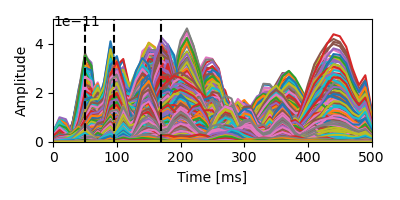
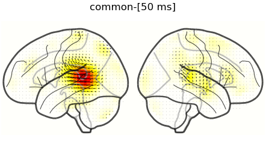
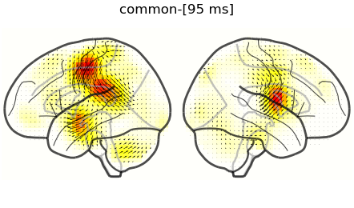
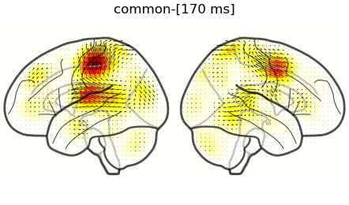
Next, we do the same with NCRFs to the Contrast predictor. Note that the peaks in the contrast condition are later than those in the common condition, and emphasizes known temporal dynamics of mismatch negativity (MMN) response. We locate the sources that are involved in the prominent MMN peak around 190ms. Note that the dircetion of activation is opposite to that of early peaks in the common condition.
times = (0.190,)
bf = eelbrain.plot.Butterfly(hs[1].norm('space'), axtitle='contrast',
h=2, vmax=vmax, ylabel='Amplitude')
for time in times:
bf.add_vline(time, color='k', linestyle='--')
bs = [eelbrain.plot.GlassBrain(
hs[1].sub(time=time), vmax=vmax, display_mode='lr',
title=f"contrast-[{time*1000:.0f} ms]",
) for time in times]
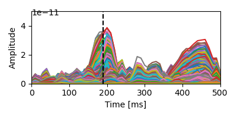
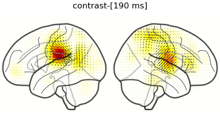
Finally, we can reconstruct the response to frequent and infrequent stimuli as \([Common - Contrast]\) amd \([Common + Contrast]\) respectively. Here, we locate the sources that are involved in the prominent peaks around 450ms, which are stronger for infrequent stimuli, to the left motor cortex. This aligns with the expected neural response to the motor task: the subject presses a button when detecting a deviant with the right index finger.
vmax = 7e-11
times = (0.45,)
# Frequent
h = hs[0] - hs[1]
bf = eelbrain.plot.Butterfly(h.norm('space'), h=2, vmax=vmax,
ylabel='Amplitude', frame=None, title='frequent')
for time in times:
bf.add_vline(time, color='k', linestyle='--')
bs = [eelbrain.plot.GlassBrain(
h.sub(time=time), vmax=vmax, display_mode='lr',
title=f"frequent-[{time*1000:.0f} ms]",
) for time in times]
# Infrequent
h = hs[0] + hs[1]
bf = eelbrain.plot.Butterfly(h.norm('space'), title='infrequent',
h=2, vmax=vmax, frame=None, ylabel='Amplitude')
for time in times:
bf.add_vline(time, color='k', linestyle='--')
bs = [eelbrain.plot.GlassBrain(
h.sub(time=time), vmax=vmax, display_mode='lr',
title=f"Infrequent-[{time*1000:.0f} ms]",
) for time in times]
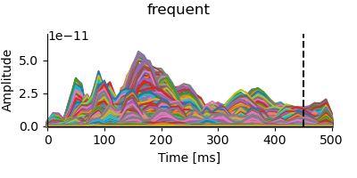
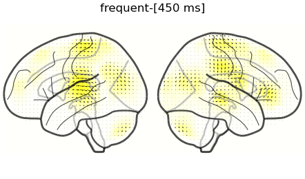
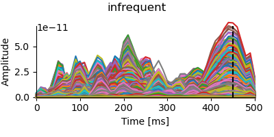
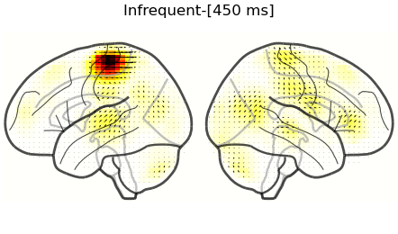
In an interactive iPython session, we can also use interactive time-linked plots with eelbrain.plot.GlassBrain.butterfly:
# brain, butterfly = eelbrain.plot.GlassBrain.butterfly(h)
Total running time of the script: (5 minutes 50.708 seconds)